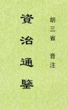

|
胡三省音注《资治通鉴》，元刊本。司马光以治平二年受诏撰《通鉴》，以元丰七年十二月戊辰书成奏上，凡越十九年而后毕。其门人刘安世尝撰《音义》十卷，世已无传。南渡后注者纷纷，而乖谬弥甚。至三省乃汇合群书，订讹补漏，以成此注。元袁桷《清容集》载先友《渊源录》，称三省天台人，宝佑进士，贾相馆之。释《通鉴》三十年，兵难稿三失。乙酉岁，留袁氏家塾，日手抄《定注》。己丑寇作，以书藏窖中得免。 案三省《自序》，称乙酉彻编，与桷所记正合。惟桷称《定注》，而今本题作《音注》，疑出三省所自改。三省又称，初依经典释文例，为广注九十七卷。后失其书，复为之注。始以考异及所注者散入《通鉴》各文之下。历法、天文则随《目录》所书而附注焉。此本惟《考异》散入各文下，而《目录》所有之历法、天文书中并未附注一条。当为后人所删削，或三省有此意而未及为欤。 【从繁体精校本简化，繁体简化会存在不少问题，字词有疑虑处，可与《繁体本》或《白文本》对照。】 （2023-1-14，独孤氏整理，异体字初校） |
 |